Calculation of DST_IV using DST_III
Contents
Definitions
Result of transform is y=x*T, where y, x are row-vectors T is transform matrix
DST_IV matrix definition
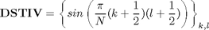
N=8; DST4=sin(pi/N*[(0:N-1)+1/2]'*[(0:N-1)+1/2])
DST4 =
0.0980 0.2903 0.4714 0.6344 0.7730 0.8819 0.9569 0.9952
0.2903 0.7730 0.9952 0.8819 0.4714 -0.0980 -0.6344 -0.9569
0.4714 0.9952 0.6344 -0.2903 -0.9569 -0.7730 0.0980 0.8819
0.6344 0.8819 -0.2903 -0.9952 -0.0980 0.9569 0.4714 -0.7730
0.7730 0.4714 -0.9569 -0.0980 0.9952 -0.2903 -0.8819 0.6344
0.8819 -0.0980 -0.7730 0.9569 -0.2903 -0.6344 0.9952 -0.4714
0.9569 -0.6344 0.0980 0.4714 -0.8819 0.9952 -0.7730 0.2903
0.9952 -0.9569 0.8819 -0.7730 0.6344 -0.4714 0.2903 -0.0980
DST_III matrix definition
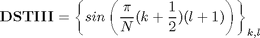
DST3=sin(pi/N*[(0:N-1)+1/2]'*[(0:N-1)+1])
DST3 =
0.1951 0.3827 0.5556 0.7071 0.8315 0.9239 0.9808 1.0000
0.5556 0.9239 0.9808 0.7071 0.1951 -0.3827 -0.8315 -1.0000
0.8315 0.9239 0.1951 -0.7071 -0.9808 -0.3827 0.5556 1.0000
0.9808 0.3827 -0.8315 -0.7071 0.5556 0.9239 -0.1951 -1.0000
0.9808 -0.3827 -0.8315 0.7071 0.5556 -0.9239 -0.1951 1.0000
0.8315 -0.9239 0.1951 0.7071 -0.9808 0.3827 0.5556 -1.0000
0.5556 -0.9239 0.9808 -0.7071 0.1951 0.3827 -0.8315 1.0000
0.1951 -0.3827 0.5556 -0.7071 0.8315 -0.9239 0.9808 -1.0000
Finding relations
From [1] we know that DSTIV matrix can be expressed in terms of Tschebyshev polynomials
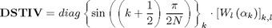
DSTIII matrix can be analogously expressed as
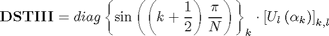
Because there exist relation
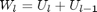
we can express DSTIII through DSTIV
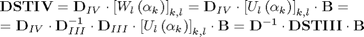
where
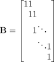
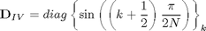
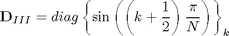
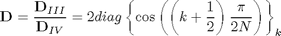
B=diag(ones(1,N))+diag(ones(1,N-1),1); D=2*diag(cos(pi/2/N*((0:N-1)+1/2)));
Check expression of DST_IV through DST_III
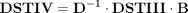
Check DSTIV matrix
inv(D)*DST3*B
ans =
0.0980 0.2903 0.4714 0.6344 0.7730 0.8819 0.9569 0.9952
0.2903 0.7730 0.9952 0.8819 0.4714 -0.0980 -0.6344 -0.9569
0.4714 0.9952 0.6344 -0.2903 -0.9569 -0.7730 0.0980 0.8819
0.6344 0.8819 -0.2903 -0.9952 -0.0980 0.9569 0.4714 -0.7730
0.7730 0.4714 -0.9569 -0.0980 0.9952 -0.2903 -0.8819 0.6344
0.8819 -0.0980 -0.7730 0.9569 -0.2903 -0.6344 0.9952 -0.4714
0.9569 -0.6344 0.0980 0.4714 -0.8819 0.9952 -0.7730 0.2903
0.9952 -0.9569 0.8819 -0.7730 0.6344 -0.4714 0.2903 -0.0980
Check computation of DSTIII transform
x=randn(1,N); y=x*DST4 % true result y1=x*inv(D)*DST3*B % compute DSTIV using DSTIII transform
y = -2.7468 -0.8589 2.9686 0.3750 -0.0572 3.9822 -1.8763 0.3354 y1 = -2.7468 -0.8589 2.9686 0.3750 -0.0572 3.9822 -1.8763 0.3354
Check expression of DST_III through DST_IV
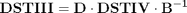
Check DSTIV matrix
D*DST4*inv(B)
ans =
0.1951 0.3827 0.5556 0.7071 0.8315 0.9239 0.9808 1.0000
0.5556 0.9239 0.9808 0.7071 0.1951 -0.3827 -0.8315 -1.0000
0.8315 0.9239 0.1951 -0.7071 -0.9808 -0.3827 0.5556 1.0000
0.9808 0.3827 -0.8315 -0.7071 0.5556 0.9239 -0.1951 -1.0000
0.9808 -0.3827 -0.8315 0.7071 0.5556 -0.9239 -0.1951 1.0000
0.8315 -0.9239 0.1951 0.7071 -0.9808 0.3827 0.5556 -1.0000
0.5556 -0.9239 0.9808 -0.7071 0.1951 0.3827 -0.8315 1.0000
0.1951 -0.3827 0.5556 -0.7071 0.8315 -0.9239 0.9808 -1.0000
Check computation of DSTIV transform
y=x*DST3 % true result y1=x*D*DST4*inv(B) % compute DSTIV using DSTIII transform
y = -3.0246 1.7402 2.2898 -1.0043 2.6802 1.6842 -2.4322 2.1756 y1 = -3.0246 1.7402 2.2898 -1.0043 2.6802 1.6842 -2.4322 2.1756
Reference
[1] Markus Pueschel, Jose M.F. Moura. The Algebraic Approach to the Discrete Cosine and Sine Transforms and their Fast Algorithms SIAM Journal of Computing 2003, Vol. 32, No. 5, pp. 1280-1316.